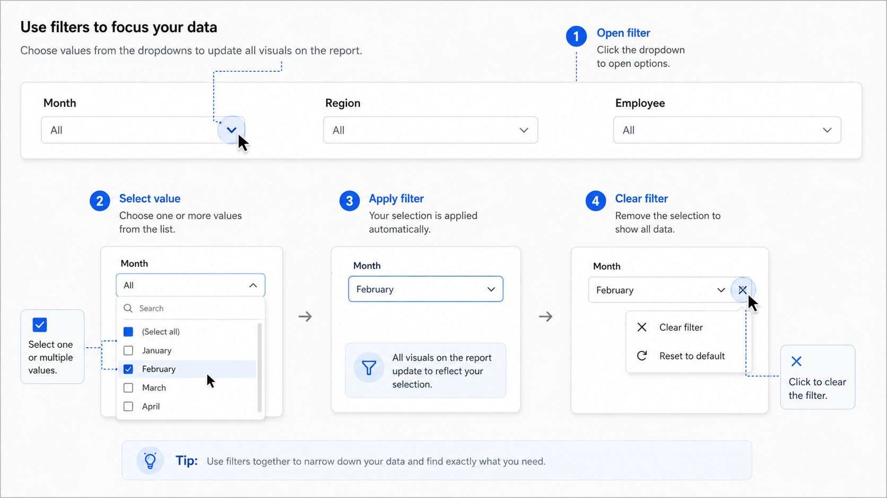

Bộ lọc giúp giới hạn phạm vi dữ liệu hiển thị trên toàn bộ trang báo cáo.

-
Nhấn vào bộ lọc để mở danh sách giá trị.
-
Chọn thời gian hoặc kỳ báo cáo cần theo dõi.
-
Chọn khu vực, đơn vị, nhân sự hoặc cửa hàng nếu cần phân tích sâu.
-
Kiểm tra các bộ lọc đang được áp dụng trước khi đối chiếu số liệu.
Khi thay đổi bộ lọc, các KPI, biểu đồ và bảng trên trang sẽ tự động cập nhật.